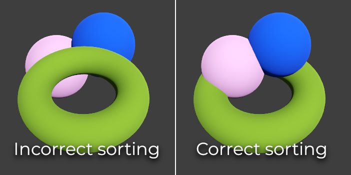

3D rendering limitations
Introduction
Due to their focus on performance, real-time rendering engines have many limitations. Godot's renderer is no exception. To work effectively with those limitations, you need to understand them.
Texture size limits
On desktops and laptops, textures larger than 8192×8192 may not be supported on older devices. You can check your target GPU's limitations on GPUinfo.org.
Mobile GPUs are typically limited to 4096×4096 textures. Also, some mobile GPUs don't support repeating non-power-of-two-sized textures. Therefore, if you want your texture to display correctly on all platforms, you should avoid using textures larger than 4096×4096 and use a power of two size if the texture needs to repeat.
To limit the size of a specific texture that may be too large to render, you can
set the Process > Size Limit import option to a value greater than 0.
This will reduce the texture's dimensions on import (preserving aspect ratio)
without affecting the source file.
Color banding
When using the Forward+ or Mobile rendering methods, Godot's 3D engine renders internally in HDR. However, the rendering output will typically be written to a lower precision buffer. This can result in visible banding, especially when using untextured materials. For performance reasons, color precision is also lower when using the Mobile rendering method compared to Forward+.
When using the Compatibility rendering method, internal HDR rendering is not used and the color precision is the lowest of all rendering methods. This also applies to 2D rendering, where banding may be visible when using smooth gradient textures.
There are two main ways to alleviate banding:
If using the Forward+ or Forward Mobile rendering methods, enable Use Debanding in Project Settings > Rendering > Anti Aliasing. This applies a fullscreen debanding shader as a post-processing effect and is very cheap.
Alternatively, bake some noise into your textures. This is mainly effective in 2D, e.g. for vignetting effects. In 3D, you can also use a custom debanding shader to be applied on your materials. This technique works even if your project is rendered with low color precision, which means it will work when using the Mobile and Compatibility rendering methods.

Color banding comparison (contrast increased for more visibility)
See also
See Banding in Games: A Noisy Rant (PDF) for more details about banding and ways to combat it.
Depth buffer precision
To sort objects in 3D space, rendering engines rely on a depth buffer (also called Z-buffer). This buffer has a finite precision: 32-bit on desktop platforms, 24-bit on mobile platforms (for performance reasons). If two different objects end up on the same buffer value, then Z-fighting will occur. This will materialize as textures flickering back and forth as the camera moves or rotates.
To make the depth buffer more precise over the rendered area, you should increase the Camera node's Near property. However, be careful: if you set it too high, players will be able to see through nearby geometry. You should also decrease the Camera node's Far property to the lowest permissible value for your use case, though keep in mind it won't impact precision as much as the Near property.
If you only need high precision when the player can see far away, you could change it dynamically based on the game conditions. For instance, if the player enters an airplane, the Near property can be temporarily increased to avoid Z-fighting in the distance. It can then be decreased once the player leaves the airplane.
Depending on the scene and viewing conditions, you may also be able to move the Z-fighting objects further apart without the difference being visible to the player.

Z-fighting comparison (before and after tweaking the scene by offsetting the Label3D away from the floor)
Transparency sorting
In Godot, transparent materials are drawn after opaque materials. Transparent objects are sorted back to front before being drawn based on the Node3D's position, not the vertex position in world space. Due to this, overlapping objects may often be sorted out of order. To fix improperly sorted objects, tweak the material's Render Priority property or the node's Sorting Offset. Render Priority will force specific materials to appear in front of or behind other transparent materials, while Sorting Offset will move the object forward or backward for the purpose of sorting. Even then, these may not always be sufficient.
Transparent objects are not rendered to the normal-roughness buffer, as they are drawn after opaque geometry. As a result, features that rely on the normal-roughness buffer will not affect transparent materials.
Some rendering engines feature order-independent transparency techniques to alleviate this, but this is costly on the GPU. Godot currently doesn't provide this feature. There are still several ways to avoid this problem:
Only make materials transparent if you actually need it. If a material only has a small transparent part, consider splitting it into a separate material. This will allow the opaque part to cast shadows and will also improve performance.
If your texture mostly has fully opaque and fully transparent areas, you can use alpha testing instead of alpha blending. This transparency mode is faster to render and doesn't suffer from transparency issues. Enable Transparency > Transparency to Alpha Scissor in StandardMaterial3D, and adjust Transparency > Alpha Scissor Threshold accordingly if needed. Note that MSAA will not antialias the texture's edges unless alpha antialiasing is enabled in the material's properties. However, FXAA, TAA and supersampling will be able to antialias the texture's edges regardless of whether alpha antialiasing is enabled on the material.
If you need to render semi-transparent areas of the texture, alpha scissor isn't suitable. Instead, setting the StandardMaterial3D's Transparency > Transparency property to Depth Pre-Pass can sometimes work (at a performance cost). You can also try the Alpha Hash mode.
If you want a material to fade with distance, use the StandardMaterial3D distance fade mode Pixel Dither or Object Dither instead of Pixel Alpha. This will make the material opaque, which also speeds up rendering.

Transparency sorting comparison (alpha-blended materials on the left, alpha scissor materials on the right)